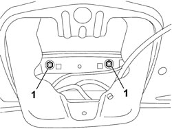
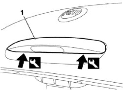
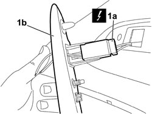

7015B60 EXTERIOR HANDLE FOR OPENING TAILGATE WITH TAILGATE UNLOCKING SWITCH - R.R.
- Path
- Procedures > 70 FITTINGS > 7015 TAILGATE/FLAP > 7015B TAILGATE CLOSING/OPENING DEVICES > 7015B60 EXTERIOR HANDLE FOR OPENING TAILGATE WITH TAILGATE UNLOCKING SWITCH - R.R.
- Kind
- repair procedure (removal / refitting; the operation number is the code)
- Applies to
- all engines; all production periods
- Interactive page
- https://sloeber94.github.io/elrnDB-fCrm/en/#/194000951
Applies to: all engines; all production periods
 Removing
Removing
 Refitting
Refitting- Open the tailgate.
- Turn the ignition key to the OFF position.
Description | Connector | |
|---|---|---|
BATTERY |
Op. 7015A04 TAILGATE INTERIOR PANEL - R+R
1. Working from inside the tailgate, unscrew the nuts.

Applies to: all engines; all production periods
1. Apply the appropriate tool to the points shown in the figure to prise the exterior handle from the tailgate.
Tool | Description | Function | Validity |
|---|---|---|---|
1878077000 | Knife | Retainer removal |

Applies to: all engines; all production periods
1. Disconnect the electrical connection (1a) and remove the handle (1b) from the tailgate.
Description | Connector | |
|---|---|---|
1a | SWITCH ON BOOT EXTERIOR HANDLE |

Applies to: all engines; all production periods
Refitting
Removing- Connect the electrical connection.
Description | Connector | |
|---|---|---|
SWITCH ON BOOT EXTERIOR HANDLE |
- Press the handle against the tailgate until the anchorages are fully home.
- Working from inside, tighten the nuts securing the handle to the tailgate.
Op. 7015A04 TAILGATE INTERIOR PANEL - R+R
- Connect the negative battery terminal.
Description | Connector | |
|---|---|---|
BATTERY |